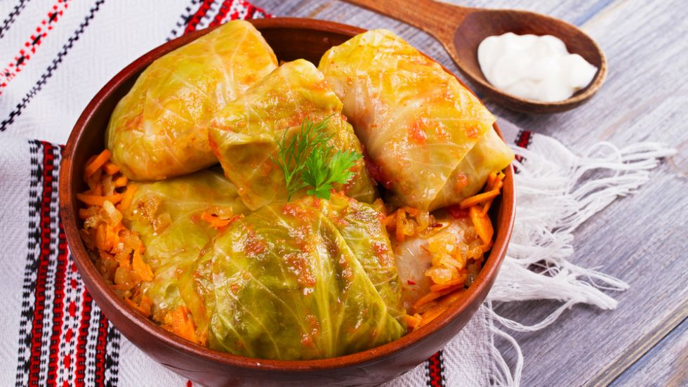
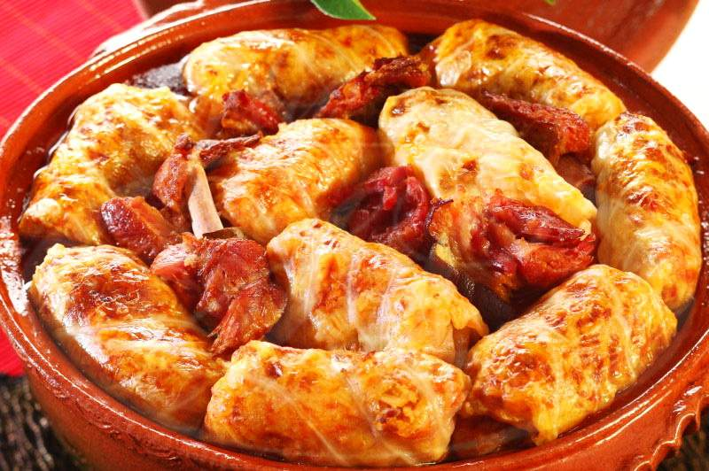
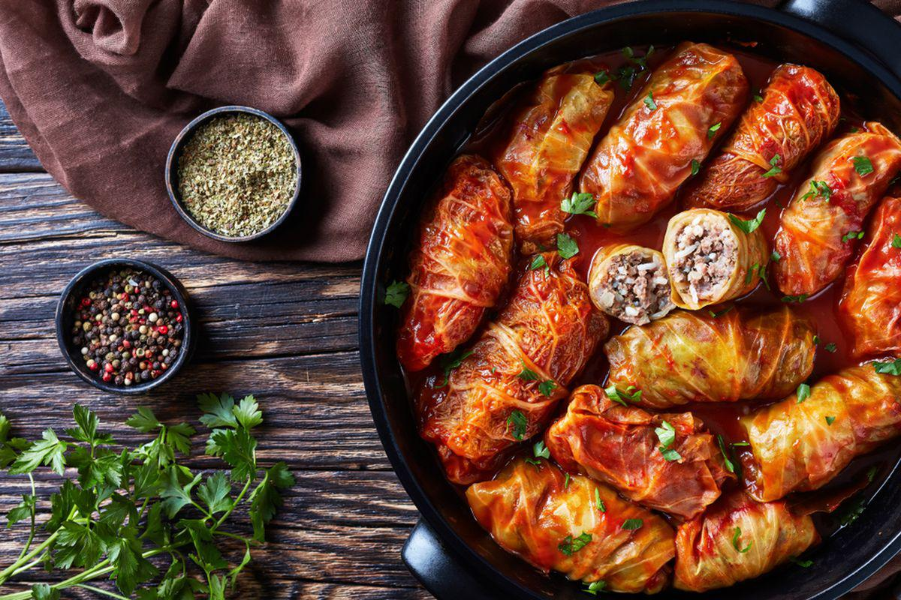

| Sarmale | ||
| Ingrediente | Mod de preparare | Meniul Principal |
Descrierea:
Ingrediente:

- 1-2 verze murate
- 1kg de carne tocată de porc
- 1 ceașcă de orez (4-5 linguri)
- 1-2 cepe medii
- 200g pastă de tomate
- sare, piper, cimbru, foaie de dafin,
piper roșu, piper boabe
- 2-3 linguri ulei
Mod de preparare:
